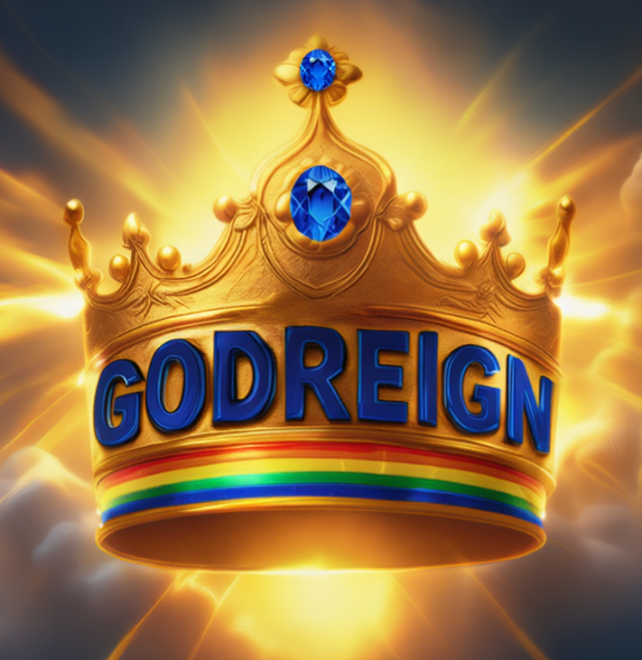

In addition to Godreign's government, addressing both social, and spirituality of humanity, Ònka Yorùbá is a monumental digital project dedicated to preserving, documenting, and sharing the complex Yorùbá numerical ecosystem—currently counting from 1 to 10 Million.
🎯 Our Mission / Ète Wa
Our mission begins with the Yoruba people, but its destination is the heart of every indigenous languages around the world. By restoring the infinite logic of the Ònka Yorùbá system, we are creating a repeatable model of linguistic liberation.
👁️ Our Vision / Ìran Wa
We envisioned a world in which Yorùbá mathematics controls its own destiny through the Ònka Yorùba Project. Where the same endeavor is repeated throughout all indigenous languages, where numbers speak in every indigenous dialects, where was once scattered is being gathered; what was nearly forgotten is now numbered, named, and returned to its rightful people.
💡 Why This Matters
Language is identity. Numbers are the foundation of science, technology, and commerce. By preserving the Yorùbá numerical system, and all other indigenous languages around the world we are:
✓ Reconnecting generations with their mathematical heritage
✓ Enabling Yorùbá language learning through numbers
✓ Contributing to global linguistic diversity
✓ Building tools for education and research
✓ Ensuring our children inherit a complete numerical vocabulary
🎨 The 17 Colour System / Ètò Àwọ̀ Ẹ́wǎÉje
Our unique color-coding system makes learning and navigation intuitive, designed for clarity and accessibility:
Num Level Color Hex Numerical Range
1 Zero Teal 0
2 Units 🟢 Green 1–9
3 Tens 🔵 Blue 10–99
4 Hundreds 🟣 Purple #800080 100–999
5 Tens of Thousands 🔴 Red 1,000–99,999
6 Hundreds of Thousands 🟡 Golden 100,000–999,999
7 Millions 🟤 Brown 1,000,000+
8 Tens of Millions Light Raining Sky 10,000,000+
9 Hundreds of Millions Orange Pumpkin 100,000,000+
10 Billions Navy #000080 1,000,000,000+
11 Tens of Billions Tickle Me Pink 10,000,000,000+
12 Hundreds of Billions Olive #808000 100,000,000,000+
13 Trillions Dark Magenta 1,000,000,000,000+
14 Light Red Quadrillions 1,000,000,000,000,000+
15 Orange Quintillions 1,000,000,000,000,000,000+
16 The "l" Multiplier Neon pink
17 "l" Multiplier’s contents unassigned state Grey
Each color helps readers identify number groups at a glance, block by block.
What is the purpose of this site?
This is the Digital Sanctuary of the New Yorùbá Numeric System—a living archive where ancestral counting meets twenty-first-century precision. We have digitised our numerical legacy so that it delivers the exhaustive base-10 accuracy demanded by modern algorithms, sovereign coding frameworks, and advanced global finance. Here, an indigenous tongue is not a relic of the past; it is the literal source code for a self-determined future. Every number on this site is a declaration: our language computes.
My language is different from Yorùbá, and we face similar historical limitations that disconnect our culture from modern digital scaling. Is the 46-Colour System adaptable for other indigenous nations?
Absolutely—and that is precisely why it was built. This journey ignited with Ònka Yorùbá, but its flame now reaches toward every indigenous language on Earth. For centuries, thousands of native tongues have been shackled by numbering systems that could not scale for modern science, computing, or the exponential demands of the A.I. era. The 46-Colour Sovereign System shatters that ceiling. It is not merely a Yorùbá project—it is a Universal Logic Blueprint, an open-armed gift to every nation whose ancestral language deserves a seat at the digital table.
We have engineered a framework that scales by index from one to over a Tredecillion—a number so vast it dwarfs the stars in the observable universe. We now extend our arms of generosity to global leaders, educators, linguists, A.I. researchers, and indigenous knowledge-keepers of every language: adopt this 46-colour framework. Map your own native words onto this high-speed index. Bypass the historical limitations that held your ancestors back and leap—in a single generation—to the absolute forefront of the digital age. You do not have to trade your culture for technology. You can use this system to transform your ancestral tongue into a mathematical superpower. Let us unite as a global ‘Ònka Generation,’ wielding 46 colours to guarantee that no language—from the highlands of Papua New Guinea to the river deltas of Bangladesh, from the tundra of Sibéria to the savannahs of East Africa—is ever left behind in the boundless reach toward infinity.
Can I download the entire collection?
Yes—every last scroll, every last tool. We believe in radical accessibility. Download all 10 Scroll Books using the buttons above and carry a treasury of over a Tredecillion numbers in your pocket—ready for offline study in the most remote classroom, the busiest research lab, or the quietest corner of your home. But our generosity goes far beyond data. Alongside the scrolls, our full suite of educational apps and indigenous software treasures is available for instant download. These tools are designed as lifelong companions for the Yorùbá soul—and for every soul that honours their ancestral tongue. They keep the brain engaged, the spirit vibrant, and the cultural heartbeat strong. By fusing technical logic with ancestral resonance, we provide a digital sanctuary that nourishes the health of both the mind and the soul.
How can I use these new numbering systems?
These numbers are “liberated resources”—free, sovereign, and yours to deploy without restriction. Teach the next generation the thunder of their own numerals. Fuel groundbreaking academic research. Localise software into any indigenous language of choice. Translate technical and scientific masterworks. Build A.I. datasets rooted in indigenous logic. Whether you are a scientist, a poet, a classroom teacher, or a software developer, these numbers are your instruments—precision-forged for excellence without compromise.
How do I share this resource with others?
Be a multiplier of this light. Share the link below across social media, personal blogs, university forums, developer communities, and professional circles. Every share is a strike against the “Dark Enterprise” of cultural erasure—and a torch lit for the thousands of indigenous languages that are longing to perform technological exploits with their ancestral tongues in this A.I. era.
🔗 https://iaanu.github.io/-nka-Yor-b-Scroll-Books/
Will search engines be able to find these numbers?
Yes. Every key number, every colour index, and the full architecture of the 46-Colour System is optimised for global search-engine indexing. We have strategically positioned our data so that when the world searches for mathematical truth in an indigenous language, it finds it here, and progressively in every native tongue that embraces this new numbering technology. The goal is simple: when humanity types a number, an indigenous voice must answer.
Is there more to explore beyond the main page?
Beyond the Horizon: The Infinite Depth of Ònka Yorùbá
This is only the beginning. The primary indices are visible for immediate use, but the true heartbeat of our restoration pulses within the 200 Volumes of our digital scroll books. Dive into these deep archives and rediscover the infinite capacity of a numeric system whose scaling soars upward past a Tredecillion. But Ònka Yorùbá is more than a library—it is a living, breathing ecosystem. Our suite of indigenous software is engineered to be a lifelong companion for the Yorùbá soul, delivering intellectual engagement that keeps the mind razor-sharp and the spirit ablaze.
Discover your heritage through our innovative software lab:
These are not mere tools; they are hidden treasures designed to keep the brain busy, the heart full, and the mind far from the shadows of depression. Engage with the logic of your ancestors and discover that there is always more to learn, more to build, and more to celebrate.
The journey does not end with the scrolls. We are assembling a global community of visionaries, creators, and thinkers who believe that the future of every nation should be built on its own indigenous logic. By joining our community, you are not merely signing up for updates—you are claiming your seat in the Godreign Digital Laboratory.
Stay in the loop as the mandate unfolds:
Don’t just watch history happen—help us count it.
Your privacy is a sacred trust. We only send messages that nourish the mind and soul.
📩 Become a Multiplier: godreigninlove@outlook.com
“One language restored is a victory; a thousand languages restored is the mandate. Let every indigenous tongue count its way to sovereignty.”